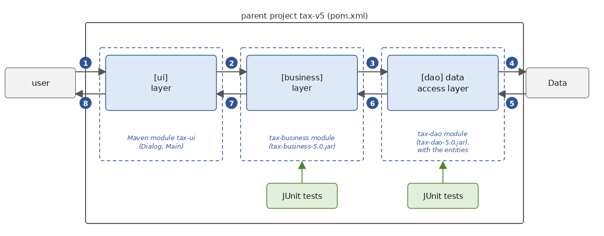
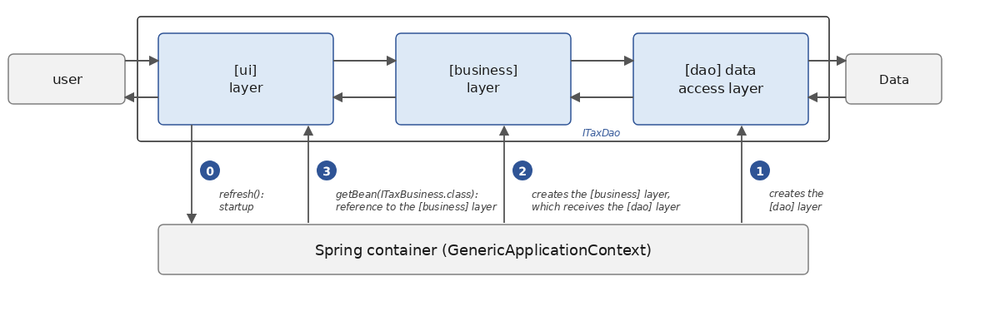

6. Schichtenarchitekturen
6.1. Einführung
Kehren wir zur letzten Version der Anwendung zur Steuerberechnung zurück (Version 3, Kapitel 5). Auf das Wesentliche reduziert, hatte ihr Hauptprogramm folgende Struktur (vereinfachtes Schema):
Dieses Programm vereint drei Arten von Verarbeitung, die sich in den meisten Anwendungen finden:
- das Abrufen von Daten, die in Dateien, Datenbanken usw. gespeichert sind: Zeilen 1–8;
- die Interaktion mit dem Benutzer: Zeilen 11–12 (Eingabe) und 14 (Ausgabe);
- die Anwendung eines fachlichen Algorithmus, der Steuerberechnung: Zeile 14. Diese Berechnung wurde bisher von der abstrakten Klasse [AbstractTax] durchgeführt, der Elternklasse von [FileTax] und [JsonTax]: In Version 3 sind Datenlesen und Berechnung noch in einem einzigen Objekt vereint.
Die Erfahrung hat gezeigt, dass die Trennung dieser verschiedenen Verarbeitungen in eigene Klassen die Wartbarkeit der Anwendung verbessert. Die Architektur einer so strukturierten Anwendung sieht wie folgt aus:

Diese Architektur wird „Drei-Schichten-Architektur“ (englisch „three-tier architecture“) genannt. Der Begriff „Tier“ bezeichnet normalerweise einen Teil der Anwendung, der auf einem anderen Rechner läuft. Befinden sich die Teile auf demselben Rechner, spricht man stattdessen von einer „Schichtenarchitektur“:
- Die Schicht [business] enthält die Geschäftsregeln der Anwendung. In unserem Fall sind das die Regeln zur Berechnung der Steuer eines Steuerzahlers. Diese Schicht benötigt zum Funktionieren Daten:
- die Steuerstufen, die sich jedes Jahr ändern;
- die Anzahl der Kinder, den Familienstand des Steuerzahlers und das Jahreseinkommen;
- die Datenzugriffsschicht oder [dao] (DAO = Data Access Object) liefert Daten, die bereits in Dateien oder Datenbanken gespeichert sind. Dazu gehören, wie in Version 3 der Anwendung, die Steuerstufen;
- die Benutzeroberflächenschicht oder [ui] (UI = User Interface) liefert die vom Benutzer eingegebenen Daten und zeigt dem Benutzer die Ergebnisse an. Hier betrifft das die Anzahl der Kinder, den Familienstand und das Jahreseinkommen des Steuerzahlers.
Allgemein gilt:
- Die Schicht [dao] übernimmt den Zugriff auf persistente Daten (Dateien, Datenbanken) oder nicht persistente Daten (Netzwerk, Sensoren usw.);
- die Schicht [ui] übernimmt die Interaktion mit dem Benutzer, sofern es einen gibt;
- die drei Schichten werden durch den Einsatz von Schnittstellen voneinander unabhängig gemacht.
Wir greifen die Anwendung [Tax], die wir bereits mehrfach untersucht haben, erneut auf, um ihr eine Schichtenarchitektur zu geben. Zunächst müssen wir die Schnittstellen der verschiedenen Schichten der Anwendung definieren.
6.2. Die Schnittstellen der [Tax]-Anwendung
Denken Sie daran: Eine Schnittstelle definiert eine Menge von Methodensignaturen. Klassen, die die Schnittstelle implementieren, liefern die Implementierung dieser Methoden.
Kehren wir zur Schichtenarchitektur unserer Anwendung zurück:
In dieser Art von Architektur geht die Initiative häufig vom Benutzer aus. Der Benutzer stellt in [1] eine Anfrage und erhält in [8] eine Antwort. Dies nennt man den Request-Response-Zyklus. Nehmen wir als Beispiel die Berechnung der Steuer eines Steuerzahlers. Dazu sind mehrere Schritte erforderlich:
- Die Schicht [ui] fragt den Benutzer nach Familienstand, Anzahl der Kinder und Jahresgehalt. Das ist die oben beschriebene Operation [1];
- danach bittet die Schicht [ui] die Schicht [business] um die Berechnung der Steuer. Dazu übermittelt sie dieser Schicht die vom Benutzer erhaltenen Daten. Das ist die Operation [2];
- Die Schicht [business] benötigt für ihre Aufgabe bestimmte Informationen: die Steuerstufen. Sie fordert diese über den Weg [3, 4, 5, 6] bei der Schicht [dao] an: [3] ist die ursprüngliche Anfrage und [6] die Antwort auf diese Anfrage;
- Mit allen benötigten Daten berechnet die Schicht [business] die Steuer;
- Die Schicht [business] kann nun die in [2] gestellte Anfrage der Schicht [ui] beantworten. Das ist der Weg [7];
- Die Schicht [ui] formatiert dieses Ergebnis und präsentiert es dem Benutzer. Das ist der Weg [8];
- Man könnte sich vorstellen, dass der Benutzer Steuersimulationen durchführt und sie speichern möchte. Dazu würde er denselben Weg [1-8] nutzen.
Wie diese Beschreibung zeigt, nutzt eine Schicht die Ressourcen der Schicht zu ihrer Rechten, niemals die der Schicht zu ihrer Linken. Betrachten wir zwei benachbarte Schichten:

Die Schicht [A] stellt Anfragen an die Schicht [B]. In den einfachsten Fällen wird eine Schicht durch eine einzige Klasse implementiert. Eine Anwendung entwickelt sich jedoch im Laufe der Zeit weiter, und die Schicht [B] kann nacheinander verschiedene Implementierungsklassen haben: [B1], [B2] und so weiter. Ist die Schicht [B] die Schicht [dao], kann sie eine erste Implementierung [B1] haben, die Daten aus einer Datei bezieht. Einige Jahre später möchte man diese Daten vielleicht in einer Datenbank speichern: Dann legt man eine zweite Implementierungsklasse [B2] an. Wenn die Schicht [A] in der ursprünglichen Anwendung direkt mit der Klasse [B1] gearbeitet hätte, wären wir gezwungen, den Code der Schicht [A] teilweise neu zu schreiben. Nehmen wir zum Beispiel an, wir hätten in der Schicht [A] etwa Folgendes geschrieben:
- Zeile 1: Eine Instanz der Klasse [B1] wird erzeugt;
- Zeile 3: Von dieser Instanz werden Daten angefordert.
Hat die neue Implementierungsklasse [B2] Methoden mit derselben Signatur wie die Klasse [B1], müssen Sie alle Vorkommen von [B1] in [B2] ändern. Das ist der günstigste Fall, und er ist ziemlich unwahrscheinlich, wenn man nicht auf diese Signaturen geachtet hat. In der Praxis haben die Klassen [B1] und [B2] häufig unterschiedliche Methodensignaturen, sodass ein erheblicher Teil der Schicht [A] neu geschrieben werden muss.
Dieses Problem lässt sich abmildern, indem man zwischen die Schichten [A] und [B] eine Schnittstelle einfügt. Dadurch werden die Methodensignaturen, die die Schicht [B] der Schicht [A] zur Verfügung stellt, in einer Schnittstelle festgeschrieben. Das vorherige Schema wird zum folgenden:

Die Schicht [A] kommuniziert nicht mehr direkt mit der Schicht [B], sondern mit deren Schnittstelle [IB]. Im Code der Schicht [A] erscheint die Implementierungsklasse [Bi] der Schicht [B] nun nur noch ein einziges Mal, nämlich wenn das Objekt erzeugt wird, das die Schnittstelle [IB] implementiert. Danach wird die Schnittstelle [IB] verwendet, nicht ihre Implementierungsklasse. Der vorherige Code wird zu:
- Zeile 1: Eine Instanz von
*[ib], die die Schnittstelle*[IB]implementiert, wird durch Instanziierung der Klasse*[B1]* erzeugt; - Zeile 3: Von der Instanz [ib] werden Daten angefordert.
Wenn wir nun die Implementierung [B1] der Schicht [B] durch eine Implementierung [B2] ersetzen und beide Implementierungen dieselbe Schnittstelle [IB] einhalten, muss nur Zeile 1 der Schicht [A] geändert werden. Das ist ein großer Vorteil, der allein schon den systematischen Einsatz von Schnittstellen zwischen zwei Schichten rechtfertigt.
Wir können noch weiter gehen und die Schicht [A] völlig unabhängig von der Schicht [B] machen. Im obigen Code ist Zeile 1 ein Problem, weil sie den Klassennamen [B1] fest einkodiert. Idealerweise sollte die Schicht [A] eine Implementierung der Schnittstelle [IB] erhalten, ohne einen Klassennamen angeben zu müssen. Das entspräche dem obigen Schema: Die Schicht [A] arbeitet gegen die Schnittstelle [IB], und es gibt keinen Grund, warum sie den Namen der Klasse kennen müsste, die diese Schnittstelle implementiert.
Genau das ermöglicht Dependency Injection (DI). Die vorherige Architektur entwickelt sich wie folgt weiter:

Eine übergreifende Komponente, der Dependency-Injection-Container, erzeugt die Objekte, die die Schichten implementieren, und verbindet sie miteinander: Er übergibt der Schicht [A] eine Referenz auf das Objekt, das die Schicht [B] implementiert. Der Code der Schicht [A] hat dann folgende Form:
- Zeilen 5–7: Die Schicht [A] erhält über ihren Konstruktor eine Instanz [ib], die die Schnittstelle [IB] implementiert. Nicht die Schicht [A] erzeugt sie, sondern der Container;
- Zeile 11: Von der Instanz [ib] werden Daten angefordert.
Die Implementierungsklasse [B1] taucht im Code der Schicht [A] nirgends mehr auf. Wird die Implementierung [B1] durch eine neue Implementierung [B2] ersetzt, ändert sich im Code der Schicht [A] nichts: Es ändert sich nur die eine Stelle in der Anwendung, an der dem Container mitgeteilt wird, welche Klasse [IB] implementiert. Diese Stelle kann den Namen der zu verwendenden Implementierung sogar aus einer Konfigurationsdatei lesen.
In der Java-Welt wurde Dependency Injection Anfang der 2000er-Jahre durch das Framework Spring populär, dessen Konfiguration damals in XML-Dateien geschrieben wurde. Das Spring Framework, mittlerweile in Version 7, bleibt der Branchenstandard; es bildet die Grundlage von Spring Boot, das wir in Kapitel 13, „Webservices“, verwenden werden. Seinen Container nutzen wir in Version 5 der Anwendung (es gibt andere, etwa CDI, den Jakarta-EE-Standard, oder Google Guice). Die Kombination aus „Java-Schnittstellen + Dependency Injection“ verbessert die Wartbarkeit der Anwendung erheblich, weil die Schichten voneinander unabhängig werden.
Kehren wir zur Schichtenarchitektur unserer Anwendung zurück. In einfachen Fällen können wir bei der Schicht [business] beginnen, um die Schnittstellen der Anwendung zu entdecken. Zum Funktionieren benötigt die Anwendung Daten:
- die bereits in Dateien, Datenbanken oder über das Netzwerk verfügbar sind. Diese Daten liefert die Schicht [dao];
- die noch nicht verfügbar sind. In diesem Fall liefert sie die Schicht [ui], die sie vom Benutzer einholt.
Welche Schnittstelle muss die Schicht [dao] der Schicht [business] bieten? Die Schicht [dao] muss der Schicht [business] die Steuerstufen liefern. In unserer Anwendung verwendet die Schicht [dao] vorhandene Daten, erzeugt aber keine neuen. Ihre Schnittstelle kann wie folgt aussehen:
- Zeile 1: Die Schnittstelle befindet sich im Paket [dao]. Die Datei [ITaxDao.java] muss sich daher, wie wir sehen werden, in einem Ordner mit dem Namen [dao] befinden;
- Zeile 10: Die Schnittstelle [ITaxDao] definiert die Methode [getTaxBrackets], die der Schicht [business] die Steuerstufen liefert. Java kennt keine Properties: Schreibgeschützte Daten werden gemäß der JavaBeans-Konvention über die Methode [getXxx] bereitgestellt. Die Steuerstufen werden als Liste [List<TaxBracket>] und nicht als Array zurückgegeben: Wie wir sehen werden, liefern die Implementierungen eine unveränderliche Liste, während die Elemente eines Arrays vom Empfänger stets geändert werden können;
- Zeile 3: importiert den Typ [TaxBracket], der im Paket [entities] definiert ist:
Eine Steuerstufe wird durch einen Record (Java 16) dargestellt: eine unveränderliche Klasse, für die der Compiler den Konstruktor (anhand der Komponenten, die in Klammern hinter dem Typnamen deklariert sind), die Felder [private final], die Zugriffsmethoden [limit()], [coeffR()] und [coeffN()] sowie die Methoden [equals], [hashCode], und [toString] erzeugt. Wir schreiben [new TaxBracket(limit, coeffR, coeffN)] , um eine Steuerstufe zu erzeugen. Die drei Komponenten sind vom Typ [BigDecimal], der Java-Klasse für exakte Dezimalzahlen: Ein [double] kann 0.068 oder 291.09 nicht exakt darstellen. Da ein *[BigDecimal] selbst unveränderlich ist, kann eine Steuerstufe nach ihrer Erzeugung nicht mehr geändert werden. Eine klassische JavaBean-Klasse mit [setXxx]-Methoden hätte dies erlaubt; wir werden sehen, dass diese Einschränkung einen Seiteneffekt einer älteren Art der Implementierung der Schicht [business]* beseitigt.
Welche Schnittstelle sollte die Schicht [business] der Schicht [ui] bieten? Sehen wir uns die Interaktionen zwischen diesen beiden Schichten noch einmal an:
- Die Schicht [ui] fragt den Benutzer nach Familienstand, Anzahl der Kinder und Jahresgehalt. Das ist die Operation [1] im Schema;
- Danach bittet die Schicht [ui] die Schicht [business] um die Berechnung der Steuer. Dazu übermittelt sie der Schicht [business] die vom Benutzer erhaltenen Daten. Das ist die Operation [2].
Die Schnittstelle der Schicht [business] könnte wie folgt aussehen:
- Zeile 1: Alles, was zur Schicht [business] gehört, wird im Paket [business] abgelegt;
- Zeile 6: Die Schnittstelle [ITaxBusiness] definiert nur eine Methode, die die Steuer eines Steuerzahlers anhand seines Familienstands, der Anzahl seiner Kinder und seines Jahresgehalts berechnet. Die Methoden einer Schnittstelle sind implizit öffentlich und abstrakt: Man muss [public abstract] nicht schreiben.
Wir untersuchen nun eine erste Implementierung dieser Schichtenarchitektur.
6.3. Beispielanwendung – Version 4
6.3.1. Das Projekt
Version 4 ist ein Programm aus mehreren Quelldateien, das keine externen Bibliotheken verwendet. Wir führen es mit dem Java-Quellcode-Launcher aus, ohne ein Maven-Projekt anzulegen. Jede Schicht belegt einen eigenen Ordner:
- Der Ordner [entities] enthält die schichtübergreifenden Typen für die Schichten [ui], [business], und [dao]: den Record [TaxBracket], die Ausnahme [TaxException], und die Enumeration [ErrorCode] ihrer Fehlercodes;
- der Ordner [dao] enthält die Schnittstelle und die Klassen der Schicht [dao]. Wir verwenden zwei Implementierungen der Schnittstelle [ITaxDao]: die Klasse [HardwiredTax], deren Daten fest einkodiert sind (Version 2), und die Klasse [FileTax], die Daten aus einer Textdatei liest (Version 3). Das Lesen einer JSON-Datei, die andere Option aus Version 3, behandeln wir in Version 5;
- der Ordner [business] enthält die Schnittstelle und die Klasse der Schicht [business];
- der Ordner [ui] enthält die Klasse der Schicht [ui];
- die Datei [Main.java] erzeugt die Schichten und verbindet sie miteinander;
- die Datei [TaxData.txt] enthält die Steuerstufen, die von der Implementierung [FileTax] der Schicht [dao] gelesen werden.
Anders als in anderen Sprachen kommt es hier auf die Ordnernamen an: In Java liegt eine Klasse des Pakets [dao] in einem Ordner namens [dao], eine Klasse im Paket [tax.dao] in einem Ordner [tax/dao], und diese Ordner beziehen sich auf das Quellverzeichnis (Source Root). So finden der Compiler und die virtuelle Maschine die Klassen anhand ihrer vollqualifizierten Namen.
Die Datei [Main.java] ist eine kompakte Quelldatei: Sie hat keine Paketdeklaration und gehört daher zum unbenannten Paket im Quellverzeichnis. Ab Java 22 (Launcher für Programme aus mehreren Dateien, JEP 458) genügt der Befehl [java Main.java], eingegeben im Ordner [TaxV4], um das Programm auszuführen: Der Quellcode-Launcher kompiliert [Main.java] im Arbeitsspeicher, und sobald er auf eine Klasse aus einer anderen Datei stößt, zum Beispiel [dao.FileTax], sucht er die Datei [dao/FileTax.java] ausgehend vom Verzeichnis von [Main.java] und kompiliert sie ihrerseits. Es wird keine Datei mit der Endung [.class] auf die Festplatte geschrieben. Eine Klasse im unbenannten Paket kann Klassen aus anderen Paketen verwenden, umgekehrt ist das nicht möglich: Keine Klasse kann [Main] importieren. Deshalb wird nur das Hauptprogramm dort abgelegt.
Eine IDE öffnet diesen Ordner unverändert und führt [Main.java] ohne besondere Konfiguration aus. Sobald das Programm externe Bibliotheken benötigt (Jackson, Spring), wechseln wir in Version 5 zu einem Maven-Projekt.
6.3.2. Komponenten der Anwendung

Typen, die mehrere Schichten durchziehen, bezeichnen wir als Entitäten. Es sind in der Regel die Klassen, die die Daten der Schicht [dao] kapseln. Diese Entitäten reichen typischerweise bis in die Schicht [ui] hinauf. Die Entitäten der Anwendung sind der bereits vorgestellte Record [TaxBracket] und die Ausnahme [TaxException] samt ihrer Enumeration von Fehlercodes:
- Zeile 6: eine Enumeration ([enum]). In Java sind die Werte einer Enumeration Objekte, nämlich eindeutige Instanzen der Klasse [ErrorCode], und eine Enumeration kann Methoden haben;
- Zeile 7: die fünf Fehlercodes. Die Methode [ordinal()], von der Klasse [Enum] geerbt, liefert die Position des Werts in der Liste: 0 für [ACCESS], 4 für [FIELD3];
- Zeilen 10–12: Jedem Code ist ein Bit zugeordnet, das durch eine Linksverschiebung gewonnen wird: [1 << ordinal()] ergibt 1, 2, 4, 8 und 16. Diese Zweierpotenzen lassen sich mit dem Operator [|] kombinieren: Der Code [FIELD2.bit() | FIELD3.bit()] (8 + 16 = 24) bedeutet, dass die Felder 2 und 3 einer Zeile fehlerhaft sind. In Version 3 war der Wert jedes Codes ausdrücklich angegeben ([ACCESS(1)], [LINE(2)] …) und eine Kombination wurde in eine Menge [EnumSet] entschlüsselt; die Berechnung des Bits anhand der Position macht diese Werte hier überflüssig. Der Fehlercode der Ausnahme bleibt eine einfache Ganzzahl, die alle Implementierungen der Schicht [dao] verwenden können;
- Zeilen 15–23: Die statische Methode [names] liefert die Namen der in einer Bitkombination enthaltenen Codes: „FIELD2, FIELD3“ für 24. Die vom Compiler erzeugte Methode [values()] liefert das Array der Werte der Enumeration; [code & c.bit()] ist ungleich null, wenn das zum Code [c] gehörende Bit in [code] gesetzt ist; [name()] liefert den Namen des Werts. Ein [StringJoiner] (Java 8) verkettet Zeichenketten und trennt sie durch das Trennzeichen, das seinem Konstruktor übergeben wurde.
- Zeile 7: Eine anwendungsspezifische Ausnahme wird von der Klasse [RuntimeException] abgeleitet; sie ist eine ungeprüfte Ausnahme (unchecked). Die Methoden, die sie auslösen, müssen sie nicht in einer [throws]-Klausel deklarieren, und ihre Aufrufer müssen sie nicht abfangen. Das ist das übliche Vorgehen für Fehler, die eine Schicht an eine andere Schicht meldet;
- Zeilen 10–11: Eine Ausnahme ist serialisierbar (die Klasse [Throwable] implementiert die Schnittstelle [Serializable]). Das Feld [serialVersionUID] gibt die Version der Klasse für die Serialisierung an; fehlt es, gibt der Compiler bei Verwendung der Option [-Xlint:all] eine Warnung aus. Die Annotation [@Serial] (Java 14) ermöglicht es dem Compiler, die Deklaration dieses Felds zu überprüfen;
- Zeile 14: der Fehlercode, eine Ganzzahl, die Bits von [ErrorCode] kombiniert. Das Feld ist [final]: Es wird im Konstruktor initialisiert und kann danach nicht mehr geändert werden;
- Zeilen 17–24: zwei Konstruktoren, einer mit einer Meldung und einem Code, der andere zusätzlich mit der ursprünglichen Ausnahme (der Ursache), die über die Methode [getCause()] zugänglich sein wird. Der erste ruft den zweiten auf ([this(...)]), der den Konstruktor der Elternklasse [RuntimeException] aufruft ([super(...)]);
- Zeilen 27–29: die Zugriffsmethode für den Fehlercode.
In dieser Version löst nur die Klasse [FileTax] der Schicht [dao] die [TaxException] aus.
6.3.3. Die [dao]-Schicht
Rufen wir uns die Schnittstelle der Schicht [dao] in Erinnerung:
Wir implementieren diese Schnittstelle auf zwei verschiedene Arten. Zunächst mit der Klasse [HardwiredTax]:
- Zeile 8: Die Klasse [HardwiredTax] implementiert ([implements]) die Schnittstelle [ITaxDao];
- Zeilen 11–18: die Steuerstufen. [List.of] (Java 9) erzeugt eine schreibgeschützte Liste: Ihre Methoden [add], [set] oder [remove] lösen eine [UnsupportedOperationException] aus. Das Feld wird in seiner Deklaration initialisiert;
- Zeilen 20–23: die Implementierung der Schnittstellenmethode. Die Annotation [@Override] weist den Compiler an zu prüfen, dass die Methode eine Methode der Schnittstelle korrekt implementiert: Ein Tippfehler im Namen würde zu einem Kompilierfehler führen;
- Zeilen 26–28: eine private Methode, die aus drei Zeichenketten eine Steuerstufe erzeugt. Ein aus einer Zeichenkette erzeugter [BigDecimal] ist exakt: [new BigDecimal("0.068")] ist genau 0,068, während [new BigDecimal(0.068)] den Wert 0,0680000000000000049… ergäbe, den nächstliegenden [double]-Wert zu 0,068.
Die Schnittstelle [ITaxDao] wird auch von der Klasse [FileTax] implementiert, die Steuerstufen aus einer Textdatei liest. Die Datei [TaxData.txt] sieht wie folgt aus:
Jede Zeile beschreibt eine Steuerstufe im Format [limit:coeffR:coeffN]. Die Zahlen werden unabhängig von der Systemsprache mit Dezimalpunkt geschrieben; so ist die Datei auf allen Rechnern lesbar. Die Werte stammen aus der Steuertabelle von 2004 für die Einkommen des Jahres 2003 und wurden unverändert übernommen: Es handelt sich um eine Übung. Die Klasse [FileTax] lautet wie folgt:
- Zeilen 3–7: Der statische Import ([import static], Java 5) erlaubt es, die statischen Member einer Klasse ohne vorangestellten Klassennamen zu verwenden. Die Werte einer Enumeration sind statische Member: Wir schreiben [FIELD1] statt [ErrorCode.FIELD1];
- Zeile 21: Die Klasse [FileTax] implementiert die Schnittstelle [ITaxDao];
- Zeilen 24, 27: der Dateiname und die gelesenen Segmente. Diese [final]-Felder werden nur einmal initialisiert, und zwar im Konstruktor (Zeilen 32 und 76). Sie werden von den Methoden in den Zeilen 79–86 zurückgegeben; [getTaxBrackets] ist die Schnittstellenmethode;
- Zeile 30: Der Konstruktor erhält den Namen der Datei mit den Steuerstufen;
- Zeile 34: Die gelesenen Steuerstufen werden in einer Liste vom Typ [ArrayList] gesammelt;
- Zeile 38: [Path.of] (Java 11) erzeugt den Dateipfad. Ein relativer Pfad bezieht sich auf das aktuelle Verzeichnis, also das Verzeichnis, in dem der Befehl [java] eingegeben wurde;
- Zeilen 39–41: Existiert die Datei nicht, wird eine [NoSuchFileException] (aus dem Paket [java.nio.file]) mit einer aussagekräftigen Meldung ausgelöst. Ihr Konstruktor mit drei Parametern erhält den Dateinamen, den Namen einer möglichen zweiten Datei (hier [null]) und den Grund des Fehlers. Ohne diesen Test würde [Files.readAllLines] selbst eine [NoSuchFileException] auslösen, deren Meldung nur aus dem Dateinamen bestünde;
- Zeile 42: [Files.readAllLines] liest die gesamte Datei in UTF-8 und liefert eine Liste ihrer Zeilen. Die Methode öffnet und schließt die Datei selbst. Bei einer großen Datei wäre es besser, sie fortlaufend mit [Files.lines] oder [BufferedReader] zu lesen;
- Zeile 45: [strip()] (Java 11) entfernt führende und nachgestellte Leerzeichen;
- Zeile 50: Die Zeile wird mit [split] zerlegt, dessen Parameter ein regulärer Ausdruck ist: Das Trennzeichen ist ein Doppelpunkt, der optional von Leerzeichen umgeben ist ([\s*] steht für null oder mehr Leerzeichen). In einer Java-Zeichenkette wird der Backslash verdoppelt;
- Zeilen 53–54: Eine Zeile, die nicht drei Felder hat, ist ungültig;
- Zeilen 57–62: Umwandlung der drei Felder. Jedes fehlerhafte Feld fügt dem Fehlercode mit dem Operator [|=] ein Bit hinzu;
- Zeilen 65–67: Eine ungültige Zeile löst eine [TaxException] aus, deren Meldung die Zeilennummer und den Inhalt angibt. Diese Ausnahme ist keine [IOException]: Sie wird in Zeile 71 nicht abgefangen und unverändert an den Aufrufer weitergegeben;
- Zeile 69: Die gelesene Stufe wird der Liste hinzugefügt;
- Zeilen 71–74: Alle E/A-Fehler stammen von [IOException]: Datei nicht gefunden ([NoSuchFileException]), unzureichende Berechtigungen ([AccessDeniedException]), Datei nicht in UTF-8 ([MalformedInputException]) usw. Der Fehler wird in eine [TaxException] mit dem Code [ACCESS] verpackt; die ursprüngliche Ausnahme bleibt als Ursache erhalten;
- Zeile 76: [List.copyOf] (Java 10) liefert eine schreibgeschützte Kopie der Liste;
- Zeilen 89–91: Umwandlung eines Felds in [BigDecimal]. Die Methode [matches] prüft, ob die gesamte Zeichenkette dem regulären Ausdruck [\d+(\.\d+)?] entspricht: eine oder mehrere Ziffern, optional gefolgt von einem Punkt und weiteren Ziffern. „0,191“ wird also abgelehnt, ebenso jede negative Zahl. Der Konstruktor [BigDecimal(String)] ist von der Sprache des Benutzers unabhängig: Er erwartet immer einen Dezimalpunkt. Im Fehlerfall liefert die Methode [null] zurück.
6.3.4. Die [business]-Schicht
Rufen wir uns die Schnittstelle dieser Schicht in Erinnerung:
Ihre Implementierung [TaxBusiness] sieht wie folgt aus:
- Zeile 10: Die Klasse [TaxBusiness] implementiert die Schnittstelle [ITaxBusiness]. Die Schicht [business] muss mit der Schicht [dao] zusammenarbeiten: Sie erhält daher über ihren Konstruktor (Zeile 16) eine Referenz auf das Objekt, das die Schnittstelle [ITaxDao] implementiert;
- Zeilen 13, 16–18: Bei der Konstruktion des Objekts fordert die Schicht [business] die Steuerstufen einmalig bei der Schicht [dao] an und speichert sie in einem [final]-Feld. Beachten Sie, dass die Schicht [business] die Schicht [dao] nur über deren Schnittstelle [ITaxDao] kennt: Sie weiß nicht, ob die Steuerstufen aus dem Code, aus einer Datei oder später aus einer Datenbank stammen;
- Zeilen 24–29: Die Schicht [business] vertraut ihren Aufrufern nicht. Ein falscher Parameter löst eine [IllegalArgumentException] aus, die ungeprüfte Ausnahme, die Java für diesen Fall vorsieht, mit einer Meldung, die den Parameter benennt;
- Zeilen 31–35: die Anzahl der Anteile. Ein [BigDecimal] hat keine arithmetischen Operatoren: Stattdessen werden seine Methoden [add], [subtract], [multiply], und [divide] verwendet. Da er unveränderlich ist, liefert jede Operation ein neues Objekt, daher die Schreibweise [shares = shares.add(...)]. Die Division durch [BigDecimal.TWO] (eine mit Java 19 hinzugekommene Konstante) ist exakt: 3 Kinder ergeben 1,5 Anteile;
- Zeilen 37–38: das zu versteuernde Einkommen und der Familienquotient. Die Division durch die Anzahl der Anteile kann unendlich viele Dezimalstellen ergeben (etwa bei einer Division durch 3): Ohne Angabe einer Genauigkeit würde [divide] dann eine [ArithmeticException] auslösen. [MathContext.DECIMAL128] begrenzt das Ergebnis auf 34 signifikante Stellen;
- Zeilen 41–47: Wir suchen die erste Stufe, deren Grenzwert größer oder gleich dem Familienquotienten ist. Die [BigDecimal]-Werte werden mit [compareTo] verglichen, das eine negative Zahl, null oder eine positive Zahl liefert: [qf.compareTo(limit) <= 0] bedeutet [qf <= limit]. Die letzte Stufe, [brackets.getLast()] (Java 21), wird verwendet, wenn keine der anderen zutrifft: Ihr Grenzwert (0) wird nicht benutzt;
- Zeile 49: die Steuer. [intValue()] liefert den ganzzahligen Anteil des Ergebnisses.
Ein früher verbreitetes Vorgehen bestand darin, die Grenze der letzten Stufe zu ändern (etwa [brackets[brackets.length - 1].setLimit(qf + 1)]), bevor gesucht wurde, damit die Suchschleife immer anhält. Diese Anweisung veränderte das von der Schicht [dao] gelieferte Array: ein Seiteneffekt auf Daten, die alle Schichten gemeinsam nutzen. Wir könnten sie hier nicht mehr schreiben, denn eine [TaxBracket] ist unveränderlich, ebenso wie die Liste, die sie enthält. Moderner Code nimmt einfach die letzte Stufe, wenn keine Grenze passt, ohne die empfangenen Daten zu verändern.
6.3.5. Die [ui]-Schicht
In den Versionen 2 und 3 war die Benutzeroberfläche im Hauptprogramm geschrieben, im Anschluss an die Erzeugung des Berechnungsobjekts. Der einzige Unterschied bestand darin, wie dieses Objekt erzeugt wurde. Wir isolieren diese Interaktion nun in einer Klasse der Schicht [ui], die die Schicht [business] nur über ihre Schnittstelle kennt:
- Zeile 6: Die Klasse [Dialog] hat keinen eigenen Zustand und enthält nur statische Member. Java kennt keine statischen Klassen auf oberster Ebene: Wir deklarieren die Klasse als [final] (sie kann nicht abgeleitet werden) und geben ihr einen privaten Konstruktor (Zeilen 16–17), der verhindert, dass Instanzen erzeugt werden;
- Zeilen 9–13: Die Hilfemeldung ist ein Textblock (Java 15), der durch drei Anführungszeichen begrenzt wird. Er kann sich über mehrere Zeilen erstrecken; die gemeinsame Einrückung der Zeilen wird entfernt. Da die schließenden Anführungszeichen am Ende der letzten Zeile stehen, endet der Text nicht mit einem Zeilenumbruch;
- Zeile 20: Die Methode
[run]erhält die Schicht[business]in Form ihrer Schnittstelle[ITaxBusiness]. Sie weiß nichts über die Klasse, die sie implementiert, und nichts über die Schicht[dao]; - Zeilen 23–25: [IO.readln] (Java 25) gibt seinen Parameter aus und liest dann eine Zeile von der Tastatur. Am Ende des Eingabestroms liefert es [null] zurück; Zeile 25 ersetzt dann [null] durch die leere Zeichenkette: Ein Signal für das Stromende beendet den Dialog genauso wie eine leere Zeile;
- Zeile 31: Die eingegebene Zeile wird an Leerzeichen zerlegt; der reguläre Ausdruck [\s+] (ein oder mehrere Leerzeichen) ignoriert mehrfache Leerzeichen;
- Zeilen 37–38: Die Zeichenketten werden mit [equals] verglichen, niemals mit [==], das Referenzen vergleicht;
- Zeilen 43–53: Die Anzahl der Kinder und das Gehalt müssen positive Ganzzahlen oder null sein. Die Methode [integer] (Zeilen 60–66) liefert -1, wenn das Feld keine Ganzzahl ist: [Integer.parseInt] löst dann eine [NumberFormatException] aus, die abgefangen wird. Eine negative Zahl und eine fehlerhafte Eingabe werden so durch dieselbe Prüfung abgelehnt;
- Zeile 55: Die Parameter sind korrekt: Die Berechnung wird von der Schicht [business] angefordert.
6.3.6. Integration der Schichten
Es bleibt, die Schichten zu erzeugen und miteinander zu verbinden. Das ist die Aufgabe des Hauptprogramms [Main.java]:
- Zeilen 1–8: Eine kompakte Quelldatei (Java 25) hat keine Klassendeklaration, darf aber Importe enthalten. Der Compiler legt ihren Inhalt in einer impliziten Klasse ab;
- Zeile 13: Die Methode [main] erhält die Kommandozeilenargumente im Array [args]. Das Argument wählt die Implementierung der Schicht [dao] aus: [hardwired] für die Klasse [HardwiredTax]; andernfalls der Name der Datei, die von der Klasse [FileTax] gelesen wird, standardmäßig [TaxData.txt] ;
- Zeile 18: Erzeugung der Schicht [dao]. Dies ist die einzige Stelle im Programm, an der die Klassen [HardwiredTax] und [FileTax] genannt werden;
- Zeile 20: Erzeugung der Schicht [business], die die Schicht [dao] erhält;
- Zeilen 21–28: Die Erzeugung der Schicht [dao] kann die Erzeugung einer [TaxException] auslösen. Der Fehler wird dann zusammen mit der Meldung der ursprünglichen Ausnahme (falls vorhanden) angezeigt, und das Programm endet mit dem Exit-Code 1 ([System.exit(1)]). Der Fehlercode wird mit der Methode [ErrorCode.names] im Klartext angezeigt. Die [return]-Anweisung in Zeile 27 wird nie ausgeführt, aber der Compiler weiß nicht, dass [System.exit] die Kontrolle nicht zurückgibt: Ohne sie würde er melden, dass die Variable [business] in Zeile 31 möglicherweise nicht initialisiert ist;
- Zeile 31: Die Schichten sind bereit: Die Schicht [ui] interagiert mit dem Benutzer.
6.3.7. Ausführungen
Im Ordner [TaxV4] mit der Datei [TaxData.txt] (Implementierung [FileTax]) und beim Testen der Eingabevalidierung:
Mit der Implementierung [HardwiredTax]:
Mit einer Datei, die nicht existiert:
Der Fehlercode lautet [ACCESS], und die Meldung der ursprünglichen Ausnahme, [NoSuchFileException], wird angezeigt: Sie besteht aus dem Dateinamen, gefolgt vom Grund, der bei ihrer Erzeugung angegeben wurde.
Mit der folgenden Datei [TaxDataInvalid.txt], in der Zeile 3 Dezimalkommas enthält:
ist das Ergebnis:
Die Felder 2 und 3 von Zeile 3 sind fehlerhaft: Der Fehlercode kombiniert die Bits von [FIELD2] und [FIELD3], und die Methode [ErrorCode.names] zeigt ihn als „FIELD2, FIELD3“ an.
6.3.8. Fazit
Die Schichtenarchitektur und der Einsatz von Schnittstellen haben unserer Anwendung eine gewisse Flexibilität verschafft. Das zeigt sich daran, wie das Hauptprogramm die Schichten [dao] und [business] erzeugt:
Ein Wechsel der Implementierung der Schicht [dao] betrifft nur Zeile 2. Sobald die Schichten erzeugt sind, ist der Code der Schicht [ui] in beiden Fällen derselbe: Die Schicht [business] wird dort über ihre Schnittstelle [ITaxBusiness] angesprochen, nicht über ihre Implementierungsklasse.
Dieselbe Flexibilität zeigt sich in der Schicht [business]: Sie wird anhand einer Referenz auf die Schnittstelle der Schicht [dao] aufgebaut. Ein Wechsel der Implementierung der Letzteren hat daher keine Auswirkungen auf die Schicht [business]. Deshalb konnte unsere einzige Klasse [TaxBusiness] ohne Änderung mit zwei verschiedenen Implementierungen der Schicht [dao] arbeiten.
6.4. Beispielanwendung – Version 5

Diese neue Version baut auf der vorherigen auf und enthält folgende Änderungen:
- Die Schichten [dao] und [business] werden jeweils in einem Maven-Modul abgelegt, das eine Bibliothek (eine JAR-Datei) erzeugt, und mit dem Unit-Test-Framework JUnit getestet;
- Die Schicht [dao] enthält nun eine dritte Implementierung, [JsonTax], die Steuerstufen mit der Bibliothek Jackson aus einer JSON-Datei liest;
- Die Integration der Schichten übernimmt der Dependency-Injection-Container von Spring, und die Implementierung der Schicht [dao] wird aus einer Konfigurationsdatei ausgewählt.
In großen Projekten arbeiten mehrere Entwickler an derselben Anwendung. Schichtenarchitekturen erleichtern diese Arbeitsweise: Da die Schichten über klar definierte Schnittstellen miteinander kommunizieren, muss sich ein Entwickler, der an einer Schicht arbeitet, nicht um die Arbeit anderer Entwickler an anderen Schichten kümmern. Es genügt, dass alle die Schnittstellen einhalten.
Um also die Schicht [business] zu testen, benötigt der Entwickler eine Implementierung der Schicht [dao]. Solange diese Implementierung nicht fertig ist, kann er eine Attrappe (Dummy) der Schicht [dao] verwenden, sofern sie die Schnittstelle [ITaxDao] einhält. Das ist ein weiterer Vorteil der Schichtenarchitektur: Eine Verzögerung bei der Schicht [dao] verhindert nicht, dass die Schicht [business] getestet wird. Die Mock-Implementierung hat außerdem den Vorteil, viel einfacher einzurichten zu sein als die echte Schicht [dao], die möglicherweise ein DBMS, Netzwerkverbindungen usw. erfordert.
Sobald die Schicht [dao] fertiggestellt und getestet ist, wird sie den Entwicklern der Schicht [business] als Bibliothek (eine in einem Maven-Repository veröffentlichte JAR-Datei) bereitgestellt und nicht als zu kopierender Quellcode. Letztlich wird die Anwendung als Hauptprogramm (das der Schicht [ui]) und Klassenbibliotheken (die anderen Schichten) ausgeliefert.
6.4.1. Das Maven-Projekt TaxV5
Version 5 ist ein Maven-Projekt mit mehreren Modulen: Ein übergeordnetes Projekt, das selbst nichts erzeugt, enthält drei Module, eines je Schicht. Die Tests bilden kein eigenes Projekt: Die Maven-Konvention legt die Tests eines Moduls in dessen Ordner [src/test/java] ab. Sie werden von Maven kompiliert und ausgeführt, sind aber nicht Teil der JAR-Datei des Moduls. Daraus ergibt sich die folgende Verzeichnisstruktur:
Den Paketen wird nun [tax] vorangestellt: [tax.entities], [tax.dao], [tax.business], [tax.ui]. Die Module [tax-dao] und [tax-business] werden nämlich von anderen Projekten wiederverwendet (Kapitel 10 bis 13), und zwei Bibliotheken, die dasselbe Programm verwendet, dürfen nicht zwei Klassen mit demselben vollqualifizierten Namen definieren. In professionellen Projekten werden den Paketen die umgekehrten Domänennamen der Organisation vorangestellt ([org.springframework], [tools.jackson] …), was eindeutige Namen sicherstellt.
Die Datei [pom.xml] des übergeordneten Projekts sieht wie folgt aus:
- Zeilen 8–11: die Angaben des übergeordneten Projekts: Gruppe [examples.tax], Name [tax-v5], Version [5.0]. Der Packaging-Typ [pom] zeigt an, dass das Projekt keine JAR-Datei erzeugt: Es fasst lediglich Module zusammen und wendet eine gemeinsame Konfiguration auf sie an;
- Zeilen 14–18: die Module, d. h. die Unterordner, von denen jeder ein Maven-Projekt enthält. Ein im Ordner [TaxV5] eingegebener Maven-Befehl gilt für alle Module, und zwar in der Reihenfolge, die ihre Abhängigkeiten vorgeben: [tax-dao], dann [tax-business], dann [tax-ui];
- Zeilen 20–23: die Eigenschaften, die die Module erben: Java 25 und Quelldateien in UTF-8;
- Zeilen 26–54: Der Abschnitt [dependencyManagement] legt die Versionen der Abhängigkeiten fest, ohne sie den Modulen hinzuzufügen. Ein Modul, das eine Abhängigkeit benötigt, deklariert sie ohne Version; so sind alle Versionen an einer einzigen Stelle gebündelt. Er umfasst die Anwendungsmodule selbst (Zeilen 28–37), Jackson 3 (Zeilen 38–42), den Spring-Container (Zeilen 43–47) und JUnit (Zeilen 48–52);
- Zeilen 57–63: Der Abschnitt [dependencies] des übergeordneten Projekts fügt allen Modulen seine Abhängigkeiten hinzu: hier JUnit mit dem Gültigkeitsbereich (Scope) [test]. Eine Abhängigkeit mit dem Scope [test] wird nur zum Kompilieren und Ausführen von Tests verwendet: Sie ist nicht in den Abhängigkeiten der erzeugten Bibliothek enthalten;
- Zeilen 66–91: Der Abschnitt [pluginManagement] legt entsprechend Version und Konfiguration der Maven-Plugins für alle Module fest: den Compiler (mit der Option [-Xlint:all], Zeilen 75–77), Surefire, das die Tests ausführt ([mvn test]), und exec, das ein Programm ausführt ([mvn exec:java]). Zeile 74 weist den Compiler an, die Namen der Methodenparameter im kompilierten Code zu erhalten: JUnit nutzt sie, um parametrisierte Tests anzuzeigen, wie wir sehen werden.
Die Anwendung wird mit dem folgenden Befehl erstellt, der im Ordner [TaxV5] eingegeben wird:
Für jedes Modul führt Maven die Phasen seines Lebenszyklus in folgender Reihenfolge aus: Kompilierung ([compile]), Kompilierung und Ausführung der Tests ([test]), Erzeugung der JAR-Datei im Ordner [target] des Moduls ([package]) und schließlich die Installation ([install]). Schlägt ein Test fehl, bricht der Build ab. Die Phase [install] kopiert die JAR-Datei und die Datei [pom.xml] jedes Moduls in das lokale Maven-Repository des Benutzers, den Ordner [~/.m2/repository]: Dort liegt zum Beispiel die Datei [examples/tax/tax-dao/5.0/tax-dao-5.0.jar]. Maven durchsucht dieses lokale Repository nach Abhängigkeiten, bevor es sie von Maven Central herunterlädt. Dieses lokale Repository erfüllt zwei Zwecke:
- Ein Maven-Befehl, der im Ordner eines Moduls eingegeben wird, zum Beispiel
[mvn exec:java]im Ordner[tax-ui], findet die Module, von denen dieses Modul abhängt, im lokalen Repository; - Die Anwendungen in den Kapiteln 10 bis 13 deklarieren in ihren Dateien [pom.xml] Abhängigkeiten von [examples.tax:tax-dao:5.0], [examples.tax:tax-business:5.0] und, für die Klasse [Dialog], von [examples.tax:tax-ui:5.0]: Sie verwenden so die Schichten aus Version 5 wieder, ohne den Quellcode zu kopieren, genau wie sie Jackson oder Spring verwenden würden.
Nach jeder Änderung an einem Modul müssen Sie daher [mvn install] erneut ausführen, damit die anderen Projekte die neue Version sehen. Die Option [-DskipTests] überspringt die Ausführung der Tests, und die Option [-q] („quiet“) beschränkt die Ausgabe von Maven auf Fehler.
Öffnen Sie in der IDE ein Projekt, das von diesen Modulen abhängt, bevor Version 5 installiert ist, sucht Maven sie vergeblich in Maven Central, und die IDE meldet nicht aufgelöste Abhängigkeiten, in IntelliJ IDEA zum Beispiel „Unresolved dependency: 'examples.tax:tax-dao:jar:5.0'“. Maven merkt sich diesen Fehlschlag: Es legt im Ordner jedes Moduls im lokalen Repository Dateien namens [*.lastUpdated] ab ([%USERPROFILE%\.m2\repository\examples\tax\tax-dao\5.0] usw.), und der Fehler kann nach dem Build mit [mvn install] weiter bestehen. Die Lösung:
- Installieren Sie Version 5 ([mvn install] im Ordner [TaxV5] oder in IntelliJ über das Panel „Maven“ / [tax-v5] / „Lifecycle“ / [install]);
- löschen Sie die Dateien [*.lastUpdated] in den Ordnern [tax-dao/5.0], [tax-business/5.0] und [tax-ui/5.0] des lokalen Repositorys, ohne die Dateien [.jar] und [.pom] anzutasten;
- synchronisieren Sie die Projekte neu (über die Schaltfläche „Sync All Maven Projects“ im Panel „Maven“) und leeren Sie, falls der Fehler bestehen bleibt, die Caches von IntelliJ („File / Invalidate Caches… / Invalidate and Restart“).
Um festzustellen, ob das Problem von Maven oder von der IDE herrührt, geben Sie [mvn compile] im Projektordner ein, der von Version 5 abhängt: Antwortet Maven mit „BUILD SUCCESS“, sind die Abhängigkeiten korrekt, und nur die IDE muss neu synchronisiert werden.
6.4.2. Die [dao]-Schicht
Das Modul [tax-dao] enthält die Schicht [dao] und die Entitäten der Anwendung. Seine Datei [pom.xml] sieht wie folgt aus:
- Zeilen 8–12: das übergeordnete Projekt. Das Modul erbt von ihm Gruppe und Version; nur sein Name wird angegeben (Zeile 14). Seine Koordinaten lauten daher [examples.tax:tax-dao:5.0];
- Zeilen 18–21: die Abhängigkeit von Jackson, ohne Version: Diese wird vom übergeordneten Projekt bestimmt. JUnit wird vom übergeordneten Projekt geerbt.
Die Entitäten
Der Record [TaxBracket] entspricht dem aus Version 4 (Paket [tax.entities]). Die Enumeration [ErrorCode] entfällt: [TaxException] ist somit allen Implementierungen der Schicht [dao] gemeinsam, ohne an die Codes einer einzelnen von ihnen gebunden zu sein:
- Zeile 14: Der Fehlercode bleibt eine einfache Ganzzahl: Jede Implementierung der Schicht [dao] definiert ihre eigenen Codes;
- Zeilen 17–32: vier Konstruktoren, mit oder ohne Ursache, mit oder ohne Code. Alle rufen den letzten auf. Ohne Code ist dieser 0.
Die [FileTax]-Implementierung
Die Schnittstelle [ITaxDao] und die Klasse [HardwiredTax] sind die aus Version 4. Die Klasse [FileTax] unterscheidet sich nur in der Schreibweise ihrer Fehlercodes:
- Zeile 6: Die Fehlercodes, die sich zuvor in der Enumeration [ErrorCode] im Entitätenpaket befanden, sind zu Konstanten in der Klasse [FileTax] geworden: Es handelt sich nämlich um Codes, die für diese Implementierung der Schnittstelle [ITaxDao] spezifisch sind ([JsonTax] hat eigene). In Java ist eine Konstante ein Feld [static final], dessen Name üblicherweise in Großbuchstaben geschrieben wird. Mehrere Felder desselben Typs können in derselben Anweisung deklariert werden. Konstanten werden innerhalb der Klasse als [FIELD1] und außerhalb der Klasse als [FileTax.FIELD1] geschrieben. Die statischen Importe aus Version 4 sind nicht mehr nötig.
Weiter unten im Konstruktor:
- Zeilen 4–14: Die Codes sind Ganzzahlen, die direkt mit dem Operator [|=] kombiniert werden;
- Zeilen 17, 24: Die Fehler werden zusammen mit ihren Codes in eine [TaxException] verpackt.
Die [JsonTax]-Implementierung
Wie Version 3 aus Kapitel 5 liest die dritte Implementierung der Schicht [dao] die Steuerstufen mit der Bibliothek Jackson aus einer JSON-Datei. Die Datei [TaxData.json] sieht wie folgt aus:
Die Klasse [JsonTax] sieht wie folgt aus:
- Zeile 17: Fehlercodes für diese Implementierung: Dateizugriffsfehler oder fehlerhafter Inhalt;
- Zeilen 29–37: Die Datei wird mit [Files.readString] (Java 11) vollständig in eine Zeichenkette gelesen, mit derselben E/A-Fehlerbehandlung wie in [FileTax];
- Zeile 40: Die JSON-Zeichenkette wird in ein Array [TaxBracket[]] umgewandelt. In Jackson 3, dessen Pakete mit [tools.jackson] beginnen, ist das [JsonMapper]-Objekt, das die Umwandlung durchführt, unveränderlich: Es wird mit Hilfe eines Zwischenobjekts, des „Builders“, erzeugt ([JsonMapper.builder()...build()]). Seine Methode [readValue] erhält den JSON-Text und die Klasse des zu erzeugenden Objekts, hier [TaxBracket[].class]. Jackson weiß, wie ein Record erzeugt wird: Es ordnet die JSON-Namen ([limit], [coeffR], [coeffN]) den Komponenten des Records zu und ruft dessen Konstruktor auf. Die Zahlen werden direkt in [BigDecimal], den Typ der Komponente, gelesen, ohne den Umweg über [double]: Sie sind daher exakt;
- Zeilen 41–43: [readValue] liefert [null] , wenn die Datei das JSON-Literal [null] enthält; in diesem Fall wird eine Ausnahme ausgelöst;
- Zeile 44: Das Array wird zu einer unveränderlichen Liste;
- Zeilen 45–48: Eine Datei, die kein JSON-Array von Steuerstufen ist, löst eine [JacksonException] aus. In Jackson 3 ist diese Ausnahme von [RuntimeException] abgeleitet: Sie ist eine ungeprüfte Ausnahme. Der [catch]-Block fängt zwei Arten von Ausnahmen ab („Multi-Catch“, Java 7) und verpackt sie in eine [TaxException] vom Typ [FORMAT].
Ein Testprogramm
Bevor wir automatisierte Tests schreiben, führen wir einen ersten visuellen Test der Schicht [dao] durch. Das Programm [TrialDao] zeigt die Steuerstufen an, die von den drei Implementierungen geliefert werden. Wir haben es in den Test-Quellen des Moduls abgelegt ([src/test/java]): Es wird nicht in die JAR-Datei der Schicht [dao] aufgenommen:
- Zeile 10: Die Methode [main]. Ab Java 25 müsste sie nicht mehr öffentlich sein und keine Programmargumente mehr annehmen; in Maven-Projekten behalten wir ihre klassische Form [public static void main(String[] args)] bei, die von allen Werkzeugen erkannt wird (Plugin [exec-maven-plugin], IDE);
- Zeilen 12–13: eine Liste der drei Implementierungen der Schnittstelle [ITaxDao];
- Zeile 15: [getClass()] liefert die tatsächliche Klasse des Objekts, deren Name (ohne Paket) [getSimpleName()] ist;
- Zeile 17: [IO.println] zeigt die Steuerstufe mit ihrer Methode [toString] an, die der Compiler für einen Record erzeugt;
- Zeilen 20–26: Behandelt eine mögliche [TaxException].
Das Programm läuft im Ordner [tax-dao]. Die Phase [test-compile] kompiliert den Hauptquellcode und den Testquellcode; der Parameter [exec.mainClass] gibt die auszuführende Klasse an, und [exec.classpathScope=test] weist das exec-Plugin an, die Testklassen und die Abhängigkeiten mit dem Scope [test] zu verwenden:
Alle drei Implementierungen liefern dieselben Stufen. Die Methode [toString] eines [BigDecimal] schreibt unabhängig von der Sprache des Benutzers stets einen Dezimalpunkt.
6.4.3. Die [business]-Schicht
Die Datei [pom.xml] im Modul [tax-business] sieht wie folgt aus:
- Zeilen 18–21: Die Schicht [business] verwendet die Schicht [dao]. Im Ordner [TaxV5] baut Maven [tax-dao] vor [tax-business]; im Ordner [tax-business] findet es [tax-dao] im lokalen Repository, wo [mvn install] es abgelegt hat. Abhängigkeiten sind transitiv: Das Modul erhält auch Jackson, von dem [tax-dao] abhängt.
Die Schnittstelle [ITaxBusiness] und die Klasse [TaxBusiness] sind die aus Version 4 (Paket [tax.business]). Das Testprogramm [TrialBusiness], das sich in den Test-Quellen des Moduls befindet, führt einige Steuerberechnungen durch:
- Zeile 12: Erzeugung der Schichten [dao] und [business]. Die Schicht [dao] wird durch die Klasse [FileTax] implementiert. Da das Programm im Ordner [tax-business] läuft, verweist der relative Pfad [../tax-dao/TaxData.txt] auf die Datendatei des Moduls [tax-dao];
- Zeilen 13–16: wiederholte Aufrufe der einzigen Methode der Schnittstelle [ITaxBusiness].
Ergebnisse im Ordner [tax-business]:
Ein Ehepaar mit 2 Kindern und eine alleinstehende Person mit 3 Kindern haben dieselbe Anzahl von Anteilen (3): Ihre Steuern sind gleich.
6.4.4. Unit-Tests mit JUnit
6.4.4.1. Das Prinzip
Die bisherigen Tests beruhten auf visueller Kontrolle: Wir haben geprüft, ob der Bildschirm die erwarteten Ergebnisse anzeigt. Dieses Vorgehen ist bei vielen Tests unpraktisch: Menschen ermüden, und ihre Fähigkeit, Ergebnisse zu prüfen, lässt im Laufe des Tages nach. Die Tests müssen daher automatisiert sein und ohne menschliches Eingreifen ablaufen.
Eine Anwendung entwickelt sich im Laufe der Zeit weiter. Bei jeder Änderung muss überprüft werden, dass sie sich nicht „zurückentwickelt“, das heißt, dass sie weiterhin die Funktionstests besteht, die bei ihrer ursprünglichen Entwicklung durchgeführt wurden. Diese Tests heißen Regressionstests. Eine mittelgroße Anwendung kann Hunderte von Tests erfordern: Tatsächlich wird jede Methode jeder Klasse der Anwendung getestet. Man spricht dann von Unit-Tests.
Zur Automatisierung dieser Tests wurden Frameworks entwickelt. In Java ist das führende Framework JUnit, das Ende der 1990er-Jahre von Kent Beck und Erich Gamma geschaffen wurde. Wir verwenden Version 6, die Ende 2025 erschienen ist (hier Version 6.0.3); ihre API, die im Paket [org.junit.jupiter.api] enthaltene, ist Version 5 von JUnit, auch JUnit Jupiter genannt (TestNG ist ein weiteres Framework nach demselben Prinzip). Die Tests werden mit dem Befehl [mvn test] von der Kommandozeile aus ausgeführt: So lassen sie sich automatisch starten, zum Beispiel bei jeder Übertragung von Codeänderungen an einen Continuous-Integration-Server. Auch die IDEs (IntelliJ IDEA, VS Code mit dem Extension Pack for Java) führen diese Tests aus und zeigen ihre Ergebnisse in einer Baumstruktur an.
6.4.4.2. Ein erstes Beispiel
Betrachten wir das Prinzip der JUnit-Tests anhand eines Beispiels. Das Maven-Projekt [DemoTests] enthält nur Tests, die im Ordner [src/test/java/demotests] liegen. Seine Datei [pom.xml] sieht wie folgt aus:
- Zeilen 18–23: Das Projekt verwendet das Artefakt [junit-jupiter], das die Test-API (die Annotationen und die Klasse [Assertions]), die Unterstützung für parametrisierte Tests und die Engine enthält, die die Tests findet und ausführt. Sein Scope ist [test];
- Zeile 33: Der Compiler behält die Namen der Methodenparameter bei, die JUnit für parametrisierte Tests anzeigt;
- Zeilen 40–44: das Surefire-Plugin, das die Tests in der Phase [test] von Maven ausführt.
Die Testklasse [Tests1] sieht wie folgt aus:
- Zeile 3: Die Prüfmethoden, die Assertions, sind statische Methoden der Klasse [Assertions]. Sie werden per statischem Import importiert, sodass wir [assertEquals(...)] statt [Assertions.assertEquals(...)] schreiben können;
- Zeile 10: Eine Testklasse ist eine gewöhnliche Klasse ohne Annotationen. Weder sie noch ihre Methoden müssen public sein: Paketsichtbarkeit genügt;
- Zeilen 13–15: die zu testende Methode. In einem realen Projekt befände sie sich im Hauptquellcode des Projekts ([src/main/java]);
- Zeilen 18–20: der Konstruktor. Er dient nur dazu, eine Meldung auf dem Bildschirm auszugeben: Wir möchten sehen, wann er ausgeführt wird;
- Zeile 23: Die Annotation [@BeforeEach] kennzeichnet eine Methode, die vor jedem Test ausgeführt wird;
- Zeile 29: Die Annotation [@AfterEach] kennzeichnet eine Methode, die nach jedem Test ausgeführt wird;
- Zeile 35: Die Annotation [@Test] kennzeichnet eine Testmethode. Eine Testmethode gibt nichts zurück, ist nicht private und hat – bis auf eine Ausnahme, die wir noch besprechen – keine Parameter;
- Zeile 38: Die Methode [assertEquals(expected, actual)] prüft, ob der erhaltene Wert dem erwarteten Wert entspricht. Ist das nicht der Fall, löst sie eine Exception vom Typ [AssertionFailedError] aus und der Test schlägt fehl. Hier muss die Zusicherung erfüllt sein;
- Zeile 45: Diese Zusicherung muss fehlschlagen. Der dritte Parameter ist die Meldung, die im Fehlerfall angezeigt wird: In JUnit ist die Meldung bei den Zusicherungen immer der letzte Parameter.
Wir führen die Tests mit dem Befehl [mvn test] im Projektordner aus. Unten sehen Sie einen Screenshot des JUnit-Konsolenstarters, der die Tests als Baumstruktur anzeigt; [mvn test] führt dieselben Tests aus, und die IDE zeigt denselben Baum an. Den Aufrufstapel haben wir gekürzt (Zeilen [...]):
- Zeilen 2–5: die Ausgabe des Tests [t1]: Zuerst wurde der Konstruktor ausgeführt, danach die Methode [before], der Test und schließlich die Methode [after]. Der Konsolenstarter zeigt die Testausgabe während der Ausführung an, noch vor dem zusammenfassenden Baum;
- Zeilen 6–9: Ausgabe für den Test [t2]. Beachten Sie, dass der Konstruktor erneut ausgeführt wurde: JUnit erzeugt für jeden Test eine neue Instanz der Testklasse. Die Tests sind somit voneinander unabhängig: Ein Test kann nicht durch den Zustand beeinflusst werden, den ein anderer Test hinterlassen hat (die Annotation [@TestInstance(Lifecycle.PER_CLASS)] verlangt dagegen eine einzige Instanz für alle Tests der Klasse);
- Zeilen 11–27: der Testbaum: die JUnit-Jupiter-Engine, die Testklassen und dann deren Tests. Das Symbol ✔ steht für einen bestandenen, das Symbol ✘ für einen fehlgeschlagenen Test. Die Tests der Klasse [Tests2], die weiter unten gezeigt wird, wurden alle bestanden; JUnit hat sie vor denen der Klasse [Tests1] ausgeführt. Die Ausführungsreihenfolge von Klassen und Methoden ist reproduzierbar, aber bewusst nicht offensichtlich: Tests dürfen nicht von ihrer Ausführungsreihenfolge abhängen;
- Zeile 27: Der Test [t2] ist fehlgeschlagen. Die Fehlermeldung enthält die an [assertEquals] übergebene Meldung, den erwarteten und den tatsächlichen Wert. Die Meldungen von JUnit sind auf Englisch;
- Zeilen 29–34: Details zum Fehler: die von der Zusicherung ausgelöste Exception [AssertionFailedError] und der Aufrufstapel zum Zeitpunkt des Fehlers, der auf die fehlerhafte Zeile verweist, nämlich Zeile 45 der Datei [Tests1.java];
- Zeilen 38–43: die Zusammenfassung: 12 Tests, von denen 11 bestanden wurden und 1 fehlschlug. Der Befehl [mvn test] endet dann mit einem Build-Fehler („BUILD FAILURE“) und einem Exit-Code ungleich null, sodass ein Skript den Fehlschlag erkennen kann.
Um nur eine Teilmenge der Tests auszuführen, verwenden Sie den Parameter [test] des Surefire-Plugins: [mvn test -Dtest=Tests2] führt nur die Tests der Klasse [Tests2] aus, während [mvn test -Dtest=Tests1#t1] nur den Test [t1] ausführt. Beachten Sie schließlich die Annotationen [@BeforeAll] und [@AfterAll], die statische Methoden kennzeichnen, die nur einmal ausgeführt werden – vor dem ersten und nach dem letzten Test der Klasse –, sowie die Annotation [@DisplayName], die einem Test einen aussagekräftigeren Namen gibt als den seiner Methode. Standardmäßig führt JUnit die Tests nacheinander aus; eine parallele Ausführung lässt sich in einer Konfigurationsdatei [junit-platform.properties] anfordern.
6.4.4.3. Weitere Zusicherungen
Die Klasse [Assertions] besitzt viele Methoden. Die Klasse [Tests2] stellt einige davon vor:
- Zeilen 29–30: prüfen, ob ein boolescher Ausdruck wahr oder falsch ist;
- Zeilen 32–33: prüfen, ob eine Referenz nicht null oder null ist;
- Zeilen 34–35: prüfen, ob zwei Referenzen auf dasselbe Objekt verweisen;
- Zeilen 41–43: Berechnungen mit den reellen Zahlen vom Typ [double] sind näherungsweise: [0.1 + 0.2] ist nicht exakt gleich [0.3]. Wir vergleichen daher zwei reelle Zahlen mit einer gewissen Fehlertoleranz, hier einem Millionstel;
- Zeilen 51–56: JUnit hat keine speziellen Zusicherungen für Zeichenketten: Wir verwenden [assertTrue], um das Ergebnis der Methoden [startsWith] oder [contains] zu überprüfen. [assertIterableEquals] prüft, ob zwei Collections dieselben Elemente in derselben Reihenfolge enthalten. Diese Zusicherungen werden mit [assertAll] gebündelt, das Lambda-Ausdrücke [() -> ...] entgegennimmt (Kapitel 7): Alle Zusicherungen werden ausgeführt, auch wenn eine davon fehlschlägt, und die Fehler werden gemeinsam gemeldet. Ohne [assertAll] beendet der erste Fehler den Test. Die Bibliothek AssertJ, die oft zusammen mit JUnit verwendet wird, bietet ausgefeiltere Zusicherungen, die in der Form [assertThat(message).startsWith("Line")] geschrieben werden;
- Zeilen 63–65: [assertThrows(Type.class, action)] führt die Aktion – einen Lambda-Ausdruck – aus und prüft, ob sie eine Exception vom Typ [Type] oder eines abgeleiteten Typs auslöst. Hier löst die Methode [get] der mit [List.of] erzeugten Liste eine [ArrayIndexOutOfBoundsException] aus, eine von [IndexOutOfBoundsException] abgeleitete Klasse: Die Zusicherung ist erfüllt. [assertThrowsExactly], verlangt dagegen eine Exception genau vom Typ [Type]. Beide Methoden geben die ausgelöste Exception zurück, sodass sich anschließend ihre Eigenschaften überprüfen lassen (Zeile 66);
- Zeilen 70–74: ein parametrisierter Test. Die Annotation [@ParameterizedTest] ersetzt [@Test]; die Methode hat Parameter, und die Annotation [@CsvSource] liefert Wertesätze, je eine Zeichenkette pro Satz, wobei die Werte durch Kommas getrennt sind. JUnit konvertiert sie in den Typ der Parameter. Der Test wird einmal pro Wertesatz ausgeführt: Das zeigen die Zeilen 18–20 der vorherigen Ergebnisse;
- Zeilen 77–81: Für einen Test mit einem einzigen Parameter liefert die Annotation [@ValueSource] direkt die Liste der Werte ([ints], [strings], [doubles] …).
Fassen wir die wichtigsten Methoden der Klasse [Assertions] zusammen:
Methode | Prüft, dass |
[assertEquals(expected, actual)] | die beiden Werte gleich sind (Methode [equals]) |
[assertEquals(real1, real2, delta)] | die beiden reellen Zahlen bis auf ein Delta gleich sind |
[assertNotEquals(v1, v2)] | die beiden Werte verschieden sind |
[assertSame(o1, o2)], [assertNotSame(o1, o2)] | die beiden Referenzen auf dasselbe Objekt verweisen (bzw. nicht) |
[assertNull(o)], [assertNotNull(o)] | die Referenz null ist (bzw. nicht) |
[assertTrue(b)], [assertFalse(b)] | der boolesche Ausdruck wahr (bzw. falsch) ist |
[assertInstanceOf(Type.class, o)] | das Objekt vom Typ [Type] oder von einem abgeleiteten Typ ist |
[assertArrayEquals(t1, t2)] | beide Arrays dieselben Elemente in derselben Reihenfolge enthalten |
[assertIterableEquals(c1, c2)] | beide Collections dieselben Elemente in derselben Reihenfolge enthalten |
[assertAll(action1, action2, ...)] | alle Zusicherungen der Aktionen erfüllt sind (Fehler werden gemeinsam gemeldet) |
[assertThrows(Type.class, action)] | die Aktion eine Exception vom Typ [Type] oder von einem abgeleiteten Typ auslöst |
[assertThrowsExactly(Type.class, action)] | die Aktion eine Exception genau vom Typ [Type] auslöst |
[fail(message)] | (schlägt immer fehl) |
Alle diese Methoden akzeptieren einen optionalen letzten Parameter: die Meldung, die im Fehlerfall angezeigt wird.
6.4.4.4. Die [dao]-Schicht testen
Kehren wir zur Anwendung [Tax] zurück. Die Klasse [DaoTests], die die Schicht [dao] testet, befindet sich im Ordner [src/test/java/tax/dao] des Moduls [tax-dao]. Sie gehört demselben Paket an wie die getesteten Klassen, was ihr Zugriff auf deren paketsichtbare Member gibt. Die Datei [pom.xml] des Moduls muss nicht geändert werden: JUnit wird vom übergeordneten Projekt geerbt. Die fehlerhafte Datendatei [TaxDataInvalid.txt] liegt im Ordner des Moduls: Dies ist während der Testausführung das aktuelle Verzeichnis.
- Zeilen 21–28: eine Methode, die anhand ihres Klassennamens eine Schicht namens [dao] erzeugt, und zwar mit einem Ausdruck [switch] (Java 14): Jeder [case] liefert nach dem Pfeil [->] den Wert des Ausdrucks;
- Zeilen 31–40: Derselbe Test wird mithilfe der Annotation [@ValueSource] für alle drei Implementierungen durchgeführt. Er prüft, dass es 7 Steuerstufen gibt, und kontrolliert den Wert der Stufe Nr. 2 (der dritten). Die Werte vom Typ [BigDecimal] werden mit [compareTo] statt mit [equals] verglichen: Die Methode [equals] eines [BigDecimal] berücksichtigt die Anzahl der geschriebenen Nachkommastellen (seine Skalierung, „scale“) und behandelt 0.191 und 0.1910 als verschieden, während [compareTo] nur die Werte vergleicht;
- Zeilen 44–48: Alle drei Implementierungen liefern exakt dieselben Bereiche. [assertEquals] vergleicht die Listen mit deren eigener Methode [equals], die die Elemente einzeln vergleicht; die vom Compiler generierte Methode [equals] eines Records vergleicht dessen Komponenten. Der Vergleich gelingt, weil alle drei Quellen die Zahlen auf dieselbe Weise schreiben;
- Zeilen 52–57: Eine fehlende Datei löst eine [TaxException] mit dem Code [ACCESS] aus, die eine [NoSuchFileException] kapselt. [assertInstanceOf] prüft den Typ der Ursache;
- Zeilen 61–66: Die Datei [TaxDataInvalid.txt] löst eine [TaxException] aus, deren Code die Bits von [FIELD2] and [FIELD3] kombiniert und deren Meldung mit „Line no. 3“ beginnt;
- Zeilen 70–74: dieselbe Überprüfung für die Implementierung [JsonTax].
6.4.4.5. Tests für die [business]-Schicht
Die Klasse [BusinessTests] im Modul [tax-business] testet die Schicht [business]:
- Zeilen 19–20: Die getestete Schicht [business] baut auf der [dao]-Schicht [HardwiredTax] auf, die von keinen Dateien abhängen. Die Felder werden bei der Erzeugung des Objekts initialisiert; da JUnit für jeden Test eine neue Instanz der Klasse erzeugt, hat jeder Test brandneue Schichten;
- Zeilen 23–34: Berechnungen, deren Ergebnisse bekannt sind und die von [@CsvSource] geliefert werden. Dies sind die Kontrollwerte der Anwendung, die bereits mit früheren Versionen ermittelt wurden: Sie müssen in allen künftigen Versionen korrekt bleiben. Die Zeichenketten [true] und [false] werden in [boolean] konvertiert;
- Zeilen 38–42: Die Steuerberechnung verändert die von der Schicht [dao] gelieferten Steuerstufen nicht. Die Steuerstufen werden vor einer Berechnung gespeichert, die die letzte Stufe verwendet, und anschließend verglichen. Da die Liste bereits schreibgeschützt ist, [List.copyOf] gibt dieselbe Liste zurück, und jeder Versuch, sie über die Schicht [business] zu verändern, würde eine [UnsupportedOperationException] auslösen, die den Test ebenfalls scheitern ließe. Der Test hält den oben beschriebenen früheren Fehler fest: Würde ihn jemand wieder einführen, würde dieser Test ihn melden;
- Zeilen 46–49: negative Parameter werden abgelehnt;
- Zeilen 55–56: eine Attrappen-Schicht [dao], wie sie der Entwickler der Schicht [business] verwenden würde, bevor die eigentliche Schicht [dao] fertig ist: eine einzige Steuerstufe, eine Steuer von 10 % auf das zu versteuernde Einkommen. Da die Schnittstelle [ITaxDao] nur eine abstrakte Methode hat, ist sie eine funktionale Schnittstelle: Ein Lambda-Ausdruck genügt, um sie zu implementieren, ohne eine Klasse zu schreiben. Lambda-Ausdrücke werden in Kapitel 7 behandelt;
- Zeilen 57–59: Die Schicht [business] arbeitet mit der Attrappen-Schicht [dao]. Die Schicht [business] wird so unabhängig von den tatsächlichen Implementierungen der Schicht [dao] für sich getestet.
6.4.4.6. Die Tests ausführen
Der Befehl [mvn test] führt im Ordner [TaxV5] eingegeben die Tests aller Module aus; im Ordner eines Moduls eingegeben, führt er nur die Tests dieses Moduls aus. Hier ist der Testbaum für das Modul [tax-dao] (wir haben nur die Testergebnisse aufgenommen):
und der Testbaum für das Modul [tax-business]:
Alle 16 Tests wurden bestanden: Jeder Wertesatz eines parametrisierten Tests zählt als ein Test, und JUnit zeigt sie zusammen mit den Namen und Werten ihrer Parameter an (diese Namen sind über die Compiler-Option [parameters] verfügbar). Wir betrachten die Schichten [dao] und [business] nun als funktionsfähig. Die von [mvn package] oder [mvn install] erzeugten JAR-Dateien enthalten nur den Code der Schichten: Die Testklassen, die im Ordner [target/test-classes] kompiliert werden, sind nicht enthalten. Beachten Sie schließlich, dass [mvn install] die Tests vor der Installation der Module ausführt: Eine Regression verhindert die Installation einer neuen Version der Schichten.
6.4.5. Die [ui]-Schicht
Die Datei [pom.xml] des Moduls [tax-ui] sieht wie folgt aus:
- Zeilen 18–21: Die Schicht [ui] verwendet die Schicht [business] und, transitiv, die Schicht [dao];
- Zeilen 23–26: der Spring-Container für Dependency Injection, das Artefakt [spring-context], das die weiteren benötigten Spring-Module mitbringt ([spring-core], [spring-beans] …);
- Zeilen 32–38: das Exec-Plugin, dessen Version vom übergeordneten Projekt festgelegt wird. Der Befehl [mvn exec:java] führt die Klasse [tax.ui.Main] aus.
Die Klasse [Dialog] ist die aus Version 4 (Paket [tax.ui]), ergänzt um eine Methode, die eine Exception und alle von ihr gekapselten Exceptions anzeigt:
- Zeile 3: eine Zeichenkette aus 40 Strichen, erzeugt mit der Methode [repeat] (Java 11);
- Zeile 5: Die Schleife durchläuft die Kette der Exceptions: Jede Exception ermöglicht über ihre Methode [getCause()] den Zugriff auf die Exception, die sie kapselt, bis hinunter zur letzten, deren Ursache [null] ist. Der Parameter hat den Typ [Throwable], die Oberklasse aller Exceptions;
- Zeile 6: Für jede Exception werden der vollständige Name ihrer Klasse (einschließlich des Pakets) und ihre Meldung angezeigt.
Die Klasse [Dialog] ist public: Künftige Versionen der Anwendung, die auf die Schicht [dao] umsteigen, können die Schicht [ui] wiederverwenden, indem sie vom Modul [tax-ui] abhängen und [Dialog.run(business)] aufrufen.
6.4.6. Schichten per Dependency Injection integrieren
In Version 4 erzeugte das Hauptprogramm die Schichten [dao] und [business] unter Nennung ihrer Implementierungsklassen:
Abgesehen von diesen Zeilen ändert sich nichts an der Anwendung, wenn sich die Implementierung einer Schicht ändert, denn jede Schicht kommuniziert mit der nächsten über eine Schnittstelle. Wir können die Unabhängigkeit der Schichten noch weiter treiben, indem wir ihre Erzeugung einem Dependency-Injection-Container anvertrauen und die Wahl der Implementierung der Schicht [dao] in eine Konfigurationsdatei verlagern. Um die Implementierung dieser Schicht zu wechseln, genügt es dann, diese Datei zu ändern, ohne die Anwendung neu zu kompilieren.

Im obigen Beispiel startet das Hauptprogramm der Schicht [ui] den Spring-Container, [0]. Der Spring-Container erzeugt die Schichten [dao] und [1], dann die Schichten [business] und [2], denen er die Schicht [dao] übergibt. Schließlich fordert die Schicht [ui] die Schicht [business] vom Container an und erhält eine Referenz darauf: [3].
6.4.6.1. Die Konfigurationsdatei
Die Wahl der Implementierung der Schicht [dao] wird in der Datei [tax.properties] im Ordner [tax-ui] festgelegt:
- Zeile 1: ein Kommentar, der mit dem Zeichen [#] beginnt;
- Zeile 2: die Klasse, die die Schicht [dao] implementiert: [HardwiredTax], [FileTax], oder [JsonTax];
- Zeile 3: die Datendatei, für Implementierungen, die eine lesen.
Eine „Properties“-Datei ist das traditionelle Konfigurationsformat von Java: eine Eigenschaft pro Zeile in der Form [key=value], gelesen von der Klasse [java.util.Properties]. Schlüssel erhalten oft ein Präfix, um Gruppen zu bilden, wie hier das Präfix [dao.]. Das Modul enthält drei weitere Konfigurationsdateien, die das Programm verwendet, wenn ihre Namen als Argumente übergeben werden:
Die Dateien [TaxData.txt] und [TaxData.json] wurden in den Ordner [tax-ui] kopiert: Ihre Pfade sind relativ zum aktuellen Ordner, und [mvn exec:java] führt das Programm im Ordner des Moduls aus.
6.4.6.2. Das Hauptprogramm
Das Hauptprogramm [Main] des Moduls [tax-ui] sieht wie folgt aus:
- Zeile 20: die Methode [main] einer gewöhnlichen Klasse in ihrer Standardform [public static void main(String[] args)];
- Zeile 22: der Name der Konfigurationsdatei: standardmäßig [tax.properties] oder die als Argument übergebene Datei;
- Zeilen 28–31: das Lesen der Konfiguration. [Files.newBufferedReader] öffnet die Datei in UTF-8; die Anweisung [try] mit einer Ressource (Java 7) schließt sie am Ende des Blocks, auch wenn eine Exception auftritt. [Properties.load] liest die Zeilen der Form [key=value]. Eine fehlende Datei löst eine [NoSuchFileException] aus, die in Zeile 51 abgefangen wird;
- Zeilen 32–33: [getProperty] liefert den Wert eines Schlüssels oder den als zweiten Parameter angegebenen Standardwert, falls der Schlüssel nicht existiert;
- Zeile 36: der Spring-Container. Spring bezeichnet ein vom Container erzeugtes und verwaltetes Objekt als „Bean“ und den Container selbst als „Application Context“. [GenericApplicationContext] ist ein Container, der programmgesteuert konfiguriert wird;
- Zeilen 38–44: die Registrierung der Schicht [dao]. [registerBean(ITaxDao.class, supplier)] gibt an, dass die Bean vom Typ [ITaxDao] vom „Supplier“ erzeugt wird, einem parameterlosen Lambda-Ausdruck, der das Objekt zurückgibt. Die Bean ist ein Singleton, der Standard-Scope von Spring: Sie wird nur einmal erzeugt, und alle Anforderungen liefern dasselbe Objekt; es gibt in der Anwendung nur eine Schicht [dao]. Der Supplier wählt die Klasse anhand der Konfiguration mit einem Ausdruck [switch] aus. Eine unbekannte Implementierung führt zu einer [TaxException];
- Zeile 46: die Registrierung der Schicht [business]: Der Container erzeugt das Objekt [TaxBusiness] selbst. Dazu untersucht er den Konstruktor der Klasse [TaxBusiness], sieht, dass dieser ein [ITaxDao] erwartet, und übergibt ihm die oben registrierte Bean dieses Typs: Das ist Dependency Injection, hier über den Konstruktor. Die Schicht [dao] ist eine Abhängigkeit der Schicht [business];
- Zeile 49: [refresh()] startet den Container. Spring erzeugt dann alle Singleton-Beans in der Reihenfolge ihrer Registrierung: zuerst die Schicht [dao], dann die Schicht [business]. Ein Fehler bei der Erzeugung tritt daher in dieser Zeile auf;
- Zeile 50: Beim Container wird eine Bean vom Typ [ITaxBusiness] angefordert. Der Container findet die Bean [TaxBusiness], die diese Schnittstelle implementiert. [getBean] löst eine Exception aus, wenn keine Bean diesen Typ hat oder wenn mehrere ihn haben. Beachten Sie, dass die Schicht [ui] die Schicht [business] erhält, ohne die Klasse zu nennen, die sie implementiert;
- Zeilen 51–56: Jeder Fehler beim Lesen der Konfiguration ([IOException]) oder beim Erzeugen der Schichten ([RuntimeException]: Auch Spring-Exceptions sind ungeprüft) wird zusammen mit dem Stacktrace der Exception angezeigt, und das Programm wird beendet;
- Zeile 59: Interaktion mit dem Benutzer, identisch mit der in Version 4.
Frühe Versionen von Spring lasen die vollständigen Namen der zu instanziierenden Klassen aus einer XML-Datei und erzeugten sie per Reflection. Wir haben uns stattdessen dafür entschieden, die möglichen Implementierungen im Supplier zu definieren: Die Konfigurationsdatei wählt lediglich unter ihnen aus, und der Compiler prüft, ob die Klassen existieren und über die erforderlichen Konstruktoren verfügen. In beiden Fällen nennt der Code der Schichten [ui] und [business] niemals die Klasse, die die Schicht [dao] implementiert. Bemerkenswert ist auch, dass die Klassen der Schichten nichts von Spring wissen: Keine von ihnen importiert Spring-Klassen, nur das Hauptprogramm tut dies.
6.4.6.3. Ausführungen
Im Ordner [tax-ui], nach einem [mvn install] im Ordner [TaxV5], mit der Datei [tax.properties] (Implementierung [FileTax]):
Mit der Implementierung [JsonTax]:
Mit der Implementierung [HardwiredTax]:
Wir haben die Implementierung der Schicht [dao] gewechselt, ohne eine einzige Codezeile zu ändern oder die Anwendung neu zu kompilieren.
Mit der Datei [tax-error.properties], die auf eine nicht vorhandene Datendatei verweist:
- Zeilen 2–3: Bevor Spring die Exception weiterreicht, schreibt es eine Warnung in sein Protokoll. Da das Projekt keine Logging-Bibliothek enthält, wird dieses Protokoll vom Standard-Logging-Mechanismus des JDK ([java.util.logging]) verarbeitet, der das Datum, die auslösende Klasse, die Stufe der Meldung und die Meldung selbst in die Fehlerausgabe schreibt;
- Zeile 10: die ursprüngliche Exception vom Typ [NoSuchFileException], ausgelöst von der Klasse [FileTax];
- Zeile 8: Die Schicht [dao] hat sie in eine [TaxException] gekapselt;
- Zeile 6: Spring selbst hat die Exception [TaxException] in eine [BeanCreationException]-Exception gekapselt, deren Meldung die Bean benennt, die nicht erzeugt werden konnte: die vom Typ [ITaxDao]. Diese Exception wurde über den Aufruf von [refresh] bis zum Hauptprogramm weitergereicht.
Die wichtigste Erkenntnis aus dieser Kette ist, dass oft die tiefste Exception – die zuletzt angezeigte – die aussagekräftigste ist.
6.4.6.4. Eine Variante: Konfiguration über eine annotierte Klasse
Spring-Anwendungen beschreiben ihre Beans üblicherweise in einer annotierten Konfigurationsklasse. Das Modul [tax-ui] enthält dafür ein Beispiel, die Klasse [TaxConfig]:
- Zeile 16: Die Annotation [@Configuration] gibt an, dass die Klasse Beans beschreibt;
- Zeile 18: Die Annotation [@PropertySource] weist Spring an, die Datei [tax.properties] selbst zu lesen. Das Präfix [file:] verweist auf eine Datei im Dateisystem, relativ zum aktuellen Verzeichnis; das Präfix [classpath:] würde auf eine Ressource in der JAR-Datei verweisen;
- Zeilen 22–32: Eine mit [@Bean] annotierte Methode erzeugt eine Bean, deren Name der der Methode ([dao]) ist und deren Typ ihrem Rückgabetyp entspricht. Spring ruft die Methode auf und liefert ihre Parameter. Die Annotation [@Value] fordert den Wert einer Eigenschaft an: [${dao.implementation}] ist der Wert des Schlüssels [dao.implementation], und [${dao.file:}] ist der Wert des Schlüssels [dao.file], wobei die leere Zeichenkette (nach dem Doppelpunkt) als Standardwert dient;
- Zeilen 35–38: die Bean der Schicht [business]. Die Methode erwartet ein [ITaxDao]: Spring übergibt ihr die von der Methode [dao] erzeugte Bean. Diesmal handelt es sich um eine Injektion über einen Methodenparameter. Damit eine Singleton-Bean nur einmal erzeugt wird, leitet Spring zur Laufzeit eine Unterklasse der Konfigurationsklasse ab, die ihre [@Bean]-Methoden überschreibt: Daher dürfen weder die Klasse noch diese Methoden als [final] oder [private] deklariert werden.
Das Hauptprogramm [MainConfig] verwendet diese Konfiguration:
- Zeile 11: [AnnotationConfigApplicationContext] ist ein Container, der durch annotierte Klassen konfiguriert wird. Sein Konstruktor registriert die von der Klasse [TaxConfig] beschriebenen Beans und startet den Container. Der Container implementiert die Schnittstelle [AutoCloseable]: Die Ressource in [try] schließt ihn am Ende des Blocks, wodurch die Beans freigegeben werden. Das Schlüsselwort [var] (Java 10) erlaubt es dem Compiler, den Typ der Variablen abzuleiten;
- Zeile 13: Die Schicht [business] wird wie zuvor bezogen;
- Zeilen 15–19: Fehlerbehandlung.
Ergebnisse:
Bei einer fehlerhaften Konfiguration hat die Exception-Kette nun eine zusätzliche Ebene: Spring meldet das Scheitern der Methode [dao] über eine [BeanInstantiationException]-Exception, die in die [BeanCreationException]-Exception gekapselt wird. Spring kann die zu instanziierenden Klassen auch automatisch entdecken: Mit der Annotation [@ComponentScan] auf der Konfigurationsklasse erzeugt es für jede Klasse eines Pakets, die mit [@Component] (oder [@Service], [@Repository]) annotiert ist, eine Bean. Hier haben wir das nicht getan, da dafür die Klassen der Schichten hätten annotiert werden müssen, wodurch sie von Spring abhängig geworden wären. Spring Boot in Kapitel 13 nutzt diesen Mechanismus intensiv.
Allein die Dependency Injection verdient ein eigenes Kapitel. Wir haben nur das Wesentliche verwendet: Beans registrieren ([registerBean], [@Bean]), den Container starten ([refresh]) und eine Bean beziehen ([getBean]). Der Container kann auch für jede Anforderung ein neues Objekt erzeugen (Scope [prototype]) oder ein Objekt pro (HTTP-)Anfrage bzw. pro Sitzung in einer Webanwendung (Scopes [request] und [session]). Mehr zu diesem Thema finden Sie in der Spring-Dokumentation: The IoC Container.
6.5. Fazit
Dieses Kapitel hat der Anwendung [Tax] die Architektur gegeben, die sie bis zum Ende des Kurses behalten wird:
- eine Schicht [dao], die die Steuerstufen über die Schnittstelle [ITaxDao] bereitstellt;
- eine Schicht [business], die die Steuer berechnet und mit der Schicht [dao] nur über deren Schnittstelle interagiert;
- eine Schicht [ui], die mit dem Benutzer interagiert und die Schicht [business] nur über deren Schnittstelle [ITaxBusiness] kennt;
- ein Hauptprogramm – das einzige, das die Implementierungsklassen kennt –, das die Schichten erzeugt und verbindet, hier mithilfe des Dependency-Injection-Containers von Spring und einer Konfigurationsdatei;
- automatisierte Unit-Tests, die jede Schicht unabhängig von den anderen überprüfen und die Regressionsfreiheit der Anwendung sicherstellen.
Die Vorteile dieser Architektur zeigen sich in den folgenden Kapiteln in vollem Umfang, in denen die Module [tax-dao], [tax-business] und [tax-ui] aus Version 5 – von [mvn install] im lokalen Maven-Repository installiert – unverändert als Maven-Abhängigkeiten wiederverwendet werden:
- Version 6 (Kapitel 10, „Datenbankzugriff mit JDBC“): Eine neue Implementierung der Schicht [dao] liest die Steuerstufen aus einer MySQL-Datenbank. Die Schichten [business] und [ui] bleiben unverändert;
- Version 7 (Kapitel 11, „Hibernate“): Eine weitere Implementierung der Schicht [dao] verwendet die ORM-Schicht Hibernate, um auf dieselbe Datenbank zuzugreifen;
- Version 8 (Kapitel 12, „Internetprogrammierung“): Die Schicht [business] wird auf einem TCP-Server installiert, der Steuern für entfernte Clients berechnet, deren Schicht [ui] aus Version 5 stammt; die Schichten sind somit auf mehrere Rechner verteilt, womit der ursprüngliche Sinn des Begriffs „Tier“ wiederhergestellt wird;
- Version 9 (Kapitel 13, „Webservices“): Die Schicht [business] wird von einem mit Spring Boot geschriebenen REST/JSON-Webservice bereitgestellt, dessen Konsolenclient die Klasse [HttpClient] des JDK verwendet.
Jedes Mal beschränkt sich die Arbeit darauf, die neue Schicht zu schreiben und das Programm anzupassen, das die Schichten integriert: Genau darin besteht der Sinn einer Schichtenarchitektur.